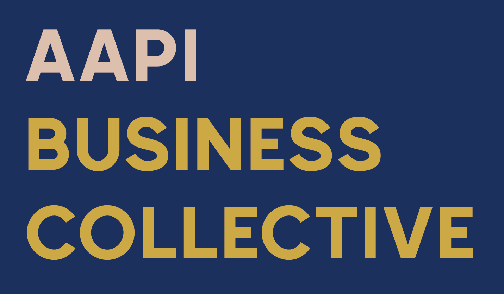
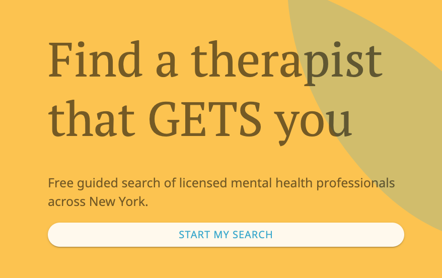
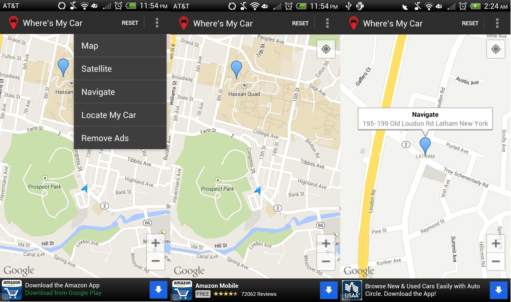
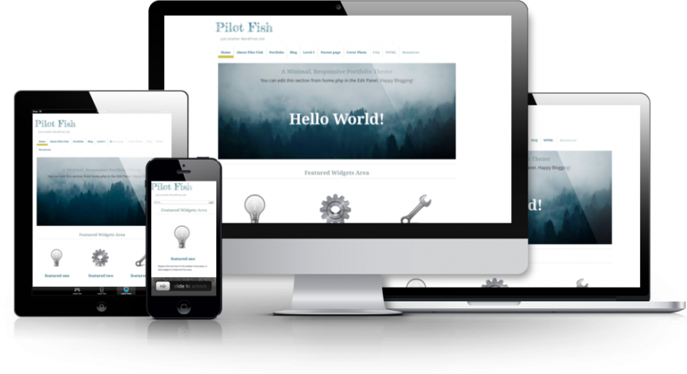

Here are some projects from either my hobbies or job. FYI, there are some projects not listed because they are in early stage development, or not ready to showcase.

AAPI Business Collective
2021
AAPI Business Collective is a directory for businesses owned by Asian Americans and Pacific Islanders. Since the start of Covid-19 pandemic, businesses owned by AAPI have been heavily impacted due to economic hardships, fear and racism. My friend Ada and I created AAPI Business Collective to be a platform for promoting and supporting AAPI businesses, and to be a common space for customers looking to shop at AAPI businesses.
AAPI Business Collective Website
Stack: Python, Flask, Vue.js

Emotivo Health
2019
Find your therapist match with Emotivo Health. I have long been a mental health advocate, so along with two friends, we built Emotivo Health to help people find their therapists.
Stack: Django, Python, PostgreSQL, React

Where's My Car Android App
2013
Where’s My Car is an easy to use app with an intuitive interface that tracks where you parked, and helps you find your car. The app's features include: save your car’s location, view road and satellite maps and open saved locations in your phone’s navigation.
Where's My Car on Google Play
Stack: Android, Java, Google Maps API

Pilot Fish WordPress Theme
2012
Voted as one of the 40 Best Free Responsive WordPress Themes for 2012, Pilot Fish is a minimal and elegant WordPress portfolio theme. It is inspired by the novel 『パイロットフィッシュ』(by Osaki Yoshio) I read while living in Sendai, Japan. It is said that a pilot fish is the fish you keep in the fish tank before a tropical fish, so as to develop a sustainable environment for which to thrive later. I called my first WordPress theme Pilot Fish hoping it would help me learn more about WordPress, and contribute to better themes in the future.
Pilot Fish On WordPress
Stack: WordPress, PHP, HTML, CSS, jQuery